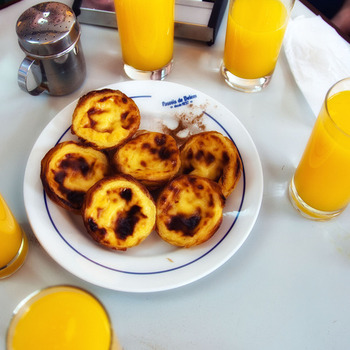

Pasteis de Nata

A delicious crispy cream pastry
A blend of a custard tart and a cake, the Pasteis de Nata is
small while packing a sugary punch. The shell is a crispy,
flaky pastry while the inside is filled with creamy custard.
"Such a tasty treat. The perfect balance of sweet and crispy."- Chef's Opinion
Ingredients
- 2 cups and 3 tablespoons all-purpose flour
- 1/4 teaspoon sea salt
- 1 1/3 cup cold water
- 2 sticks unsalted butter
- 1 1/4 cups milk
- 1 1/3 cups granulated sugar
- 1 cinnamon stick
- 1/2 teaspoon vanilla extract
- 6 large whisked egg yolks
Steps
- Mix 2 cups flour, sea salt, and 3/4 cup cold water in a bowl until pillowy dough forms. Flour the dough, cover with plastic wrap, and let it rest at room temperature for 15 minutes
- Roll dough into 18-inch square
- Dot 2/3 of the dough with 1/3 cup butter, leaving plain 1-inch border around the dough
- Fold unbuttered portion of dough over rest of dough. Starting from the top, pat down the dough with your hand to release any air bubbles
- Turn dough 90 degrees so the fold is facing you. Lift dough and flour work surface. Roll it out again to an 18 inch square, then repeat buttering 2/3 of the dough and folding the unbuttered portion
- Repeat step 5
- Lift edge of dough with spatula and roll dough away from you into a tight log. Trim ends and cut the log in half. Wrap each piece in plastic wrap and chill for 2 hours
- In medium bowl, whisk remaining flour and 1/4 cup milk until smooth
- In small saucepan, boil sugar, cinnamon, and water to 220 degrees Fahrenheit
- Warm up remaining milk until hot. Whisk hot milk into flour mixture. Remove cinnamon stick and stir in hot milk and flour mixture. Add vannilla extract. Remove cinnamon. Whisk in the yolks and strain mixture into a bowl. Cover with plastic wrap and refrigerate for 6 hours
- Heat oven to 550 degrees Fahrenheit. Roll dough out and cut into 18mm pieces. Place inside muffin pan. Fill each cup with cool custard. Bake until lightly golden brown
- Remove from oven and allow few minutes to cool